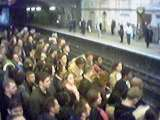
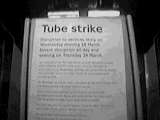
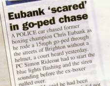
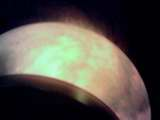
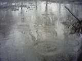
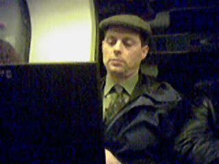
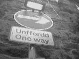
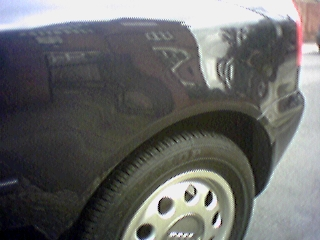

25 blogs from March 08, 2001 to March 31, 2001
View current blogs
Earth hit by solar storm
So reads the headline of an article on the Science and Technology section of the BBC News. This refers to the large sunspot cluster which has developed on the sun from which a flare erupted on Thursday. The result of this flare is that the Northern Lights will be seen by far more people and places than is normal. There will also be other effects, such as telecommunications disruptions as the particles from the sun can cause interference.
I have always wanted to see the Northern Lights, but as yet have failed to be in the right place at the right time. Most of Britain suffers from light pollution so the chances of seeing anything in London are zero. The Astronomy photo of the day May 16, 1999 shows what Europe looks like at night from satellites orbiting the earth, this kind of explains why we can see so few stars. There are some good galleries of aurora photos available on the web. Here are links to just a few of them:
So, what causes Aurora? Well, Auroras, Paintings in the sky seems to be a really well written set of common questions and answers, i.e. What makes them happen?, written in an easy-to-read style,
with pictures to illustrate the points.
And finally, the University of Alaska's Geophysical Institute have maps for predicting where Auroras will be on a particluar day.
Posted by Jane at 11:39 AM
Add a comment

The strike was still happening when it was time to go home. I left the office at around 6pm and decided to try my luck at Farringdon tube station as the Metropolitan line was running a limited service between Liverpool Street and Amersham. They weren't joking about limited. I stood on the station for around half an hour before getting fed up and deciding to walk again. (I would have had to walk between Baker Street and Paddington anyways). So, off I trotted, back the same route as this morning. The queues for the buses were too long to wait in (and having waited 30 minutes already, I just couldn't face any more standing around). So, I eventually made it to Paddington and onto a train back to Ealing. I've not been so physically tired for a long time. I reckon I walked around 6 miles today just to get to work. Now that's dedication...
Posted by Jane at 8:07 PM
Add a comment

So, chaos in London today as the RMT union members strike for better safety on the underground. The Transport for London site has this helpful message "Due to Industrial Action, Tube services throughout London are severley disrupted." Meanwhile, thetube.com has a more helpful page indicating what services are running.
So, I got a train from Ealing Broadway to Paddington and then walked from there to work at Chancery Lane. It's about 3 miles and took about an hour. It wasn't too bad, not something I'd choose to do everyday, but at least it was dry and sunny and not too cold.
It was quite entertaining watching people take to the streets, with cycles, micro scooters, roller blades and on foot. I passed many people with maps in their hands, some looked as if they'd bought A-Z maps especially as the mapbooks looked very clean and new.
As usual, photos taken with the eyemodule.
Posted by Jane at 9:22 AM
Add a comment
I saw a couple of interesting articles in the Metro again this morning. The first was a selection of images from The Mollecular Expressions Photo Gallery. These are digital photographs taken through microscopes that can magnify up to 1,000 times. Interesting images are dinosaur bones, Meteorites, wines and vegetables. I particularly like the lettuce picture displayed below (with permission of Michael W. Davidson from the National High Magnetic Field Laboratory).
The other interesting article was about getting free music over the internet. A new service, BitBop Tuner, can be downloaded and will then scan on-line radio transmissions for the track you want to listen to. It will also allow you to track the type of music you want to listen to and find you likely radio stations. It scans playlists too, so should be able to find you radio stations who are about to play the track you're interested in. All sounds pretty good to me.
Posted by Jane at 9:58 AM
Add a comment

On my way into work this morning, I took a look at the Metro and a 3 paragraph story caught my eye, the Evening Standard have a version of it 'Scared' Eubank on scooter charge. Basically, this is the story of how Chris Eubank was charged for riding a Go-Ped around the streets of Brighton without a helmet. (A Go-Ped is a motorised scooter about which there are very few laws in the UK). What amused me in the Metro article was the following sentence "PC Simon Rideout had to start the blue lights flashing and the siren sounding before the ex-boxer pulled over". Now, the thought of a police car chasing a Go-Ped is entertaining as Go-Ped's aren't exactly the quickest method of transport known to man. Chris Eubank received a conditional discharge and had to pay £35 in costs.
The BBC have a couple of related articles, the first in December 1999 Illegal skateboard driver escapes jail which was about someone who was found guilty of riding a motorised skateboard while disqualified from driving, the second in October 2000 Police back scooter ban which was about the "issues" with the motorised scooters in regards to the UK law.
One of the shops in Ealing Hippie Heaven has a bigfoot Go-Ped in it's window, and they really do look cool. (They're not cheap though  )
)
Posted by Jane at 5:04 PM
Add a comment
Every few weeks I seem to get another one of these internet test things, this one kind of appealed Emode.com: The All-New What Breed of Dog Are You?. I'm apparently a Bernese Mountain Dog! This means that I'm down-to-earth, strong, and sweet. Awww, nice!
It allows you to add other people to your "pack" and you can see what type of dog all of your friends are, so far I seem to have a mixed set of friends, including some who didn't like what dog they were the first time and so changed a few answers to become something different
Posted by Jane at 12:12 PM
Add a comment
I spotted TiVo's Data Collection and Privacy Practices linked from another blog (BoingBoing.net) and it makes kind of interesting reading. I'm not sure whether I'm surprised by this or not, I guess I knew Tivo was capable of this as the capturing of viewing data is what makes Tivo work. The paragraph "TiVo permits its subscribers to disable the collection of viewing information and diagnostic logs by calling TiVo toll-free at 1-877-367-8486 (1-877-FOR-TIVO)." is kind of interesting though.
On further investigation, CNN ran a story on the subject yesterday Privacy group criticizes TiVo for collecting info
Labels: TiVo
Posted by Jane at 9:48 AM
Add a comment
Photo quiz
I took the following photograph with the eyemodule last night, but what is it of? Is it a photo taken from a rocket as it approaches a planet surface? Is it a knee?

So, do you think you know what it is? If so, then email me with your suggestion.
Guesses so far - Update 27 March 2001
There have been a few guesses so far:
- a pint of guiness
- a pint of beer
- a street lamp
- a bald head
None of them is quite right so far... altho one is quite close. So, any other suggestions?
Posted by Jane at 10:43 AM
Add a comment
It was pouring with rain when I walked to the tube this morning, and the path I walk along to get to the station was flooded in parts. The "green" has turned into a muddy pool.
I decided to try my luck taking a photo with the trusty eyemodule and produced the following image - it is in colour, although that is kind of hard to believe.

Posted by Jane at 11:21 AM
Add a comment
A few minutes ago I was trying to get to my bank in
Soho Square
and I saw the Queen (of England) and Prince Phillip.
There was a crowd of people and lots of police and it looked like someone
was visiting the Tucan pub. Then I spotted the Royal Standard flying on a car, and realized
it was the Queen and she was visiting something opposite the pub.
I was trying to make my way through the crowd and she stepped out
from a building, waved, there was some clapping and cheering, then
she got into a car and was driven away. Show over.
Posted by Richard at 11:41 AM
Add a comment
Sitting on the tube on my way home this evening, this guy was sitting opposite me. I'm not sure what it was about him but I needed to take a quick photo of him, I think it was because of the laptop and the flat cap, two things which stereotypically don't go together very often.

(Photo taken with the eyemodule and with apologies to said chap)
Posted by Jane at 10:20 PM
Add a comment
According to The Register Warner Brothers have stopped the legal action against the Harry Potter web sites. They appear to have discovered that the sites do not infringe upon the trademarks it initially thought they had.
Other related articles/sites are the Claire Field wins Harry Potter Web site case article in The Register and the Potterwar.org.uk site
And of course, the site about which all of this revolves harrypotterguide.co.uk
Posted by Jane at 1:20 PM
Add a comment
According to the article Official website launched on the hullcityafc.net web site, there is a new allocation of money available for football clubs. This is based on the club having an official website, and generating traffic to it's web site.
So, get visiting the official Hull City site.
Labels: hull city
Posted by Jane at 11:45 AM
Add a comment

We spent the weekend in Aberystwyth (Wales, UK). Not sure why really. Hadn't been there before. Jane might write up a travelogue but for now we have some
eyemodule photos.
While researching the trip I found virtualhotels.com, which is handy for narrowing down the choice of hotels in an area. Then you need to jump off to Google or similar to get extra information about
a place.
We ended up at Conrah Country House Hotel. Nice place. Great service. Recommended. "Helicopter arrivals may be accommodated by prior arrangement with the hotel". Of course. We may get addicted to luxury hotels like the Conrah.
Posted by Richard at 8:51 PM
Add a comment
I'm shocked by how absorbed I become when playing the card game Pit. You try to collect a set of commodities (like all corn cards, wheat cards, etc) by exchanging them blind with other players. There are no turns, you all just call out how many cards you want to exchange: shouting "trade two two two two TWO TWO" and grab the two cards from anyone who offers. It's noisy. You need at least three players, but more is better.
Posted by Richard at 1:36 PM
Add a comment
Hull City Latest...
Woohoo! After a draw with Plymouth Argyle last night at Plymouth, Hull are in one of the Play-Off spots. Okay, so we're 7th and are only one point ahead of Rochdale, and they have 3 games in hand but at least we're there for the moment.
Our new owner, Adam Pearson, has been speaking to the press and has said that Brian Little will be staying as our manager which is excellent news, and also that he plans to support the project to build a new stadium in Hull. He seems alright for an ex-Leeds Director and Huddersfield Town supporter
And, the chap who used to spend his Saturday Afternoon's being our mascot, Roary, is mentioned on the BBC sport news with his new club, Exeter City.
Plymouth Argyle have banned "Alex the Greek" (which is Roary's new name/job) from the Plymouth v Exeter match. It would appear that Alex the Greek gets up to all the mischief that he did when he was "Roary the Tiger", and Plymouth are concerned about him upsetting their supporters. He made the news with the FA Cup match between Hayes Town and Hull City when he was sent off (or at least escorted from the playing area by the stewards).
Exeter approached "Roary" last October and made him an offer he could not refuse. See Mascot swaps Tigers for leather on the BBC sport news site for more.
Labels: hull city
Posted by Jane at 9:32 AM
Add a comment
All of the eateries around the office, in Hatton Gardens, are getting worse.
Our favourite cafe was "refurbished" over Christmas and re-opened with new decor and new owners. The food hasn't been as good since then, so we only go there once a week, rather than every day.
We went to another one today, Aud's, on Greville Street. The food was okay, but the service was pretty poor. We'd only just finished eating before we were asked to leave as other people were waiting. We weren't actually intending to sit there all day, but this was just rude (the manner it was said wasn't pleasant either)
So, we're on the hunt for a good, reliable cafe, which serves breakfasts and jacket potatoes, and maybe even omelette baps. Any suggestions anyone?
Posted by Jane at 12:59 PM
Add a comment
According to the BBC Sports News Adam Pearson is to become the chairman and chief executive of Hull City football club. He has resigned from his position as Commercial Director at Leeds United to take on this position.
Labels: hull city
Posted by Jane at 4:13 PM
Add a comment
Weekend sports roundup...
Wycombe beat Leicester to get into the FA Cup semi-final (they're going to play Liverpool). Not a bad achievement for a 2nd division team, especially one who had to advertise to find a striker, and who signed an unknown player from Belfast, Roy Essandoh, less than a week before the game on a 2 week contract. Quote from the Wycombe page on the Nationwide website - "Ten days ago the Wanderers striker was out of work but he responded to an Internet plea from the Adams Park outfit for a new goalscorer that duly led to the second half substitute notching the dramatic winner."
Hull City lost to Brighton at the Withdean stadium by 3 goals to nothing. That result leaves Brighton 2nd in the league, and pushes Hull down to 10th. If we'd even got one point we'd have been in the play-off spot. There are rumours starting to circulate about who our new owners are, and apparently a press conference is expected at 5pm today... watch this space
Labels: hull city
Posted by Jane at 1:46 PM
Add a comment
I saw some wonderful eyemodule pictures today at the eyebrowse page for Bob Jacobs. These are taken by an eyemodule (an original one by the size of the images) of NASA launching Discovery into space.
Posted by Jane at 11:10 AM
Add a comment
Is Spaced (UK, Channel 4, 21:30) the best thing that has ever been on tv ever? Why yes, yes it is. And is this because it has no canned laughed? Primarily, yes.
One day I'll get round to picking up the first series on DVD. (Available at Amazon or Blackstar and lots of other places probably.)
The semi-official web site is... busy looking. The official channel 4 one is... less busy looking.
Posted by Richard at 6:53 PM
Add a comment
Material things are just things and don't matter, or something. But still it's so good to get our car back again, restored to it's former glory after a, er, slight miscalculation caused the car to come into contact with a large concrete block when someone, possibly me, was trying to park it. Could have happened to anyone. Anyway...It's also an excuse to see how images work in blogs.
So this is it, the picture of the back end of our car, all shiny and unscratched. You'll have to imagine the "before shot", when this area was dented and mangled.

[Taken with Jane's eyemodule]
Posted by Richard at 12:33 PM
Add a comment
It's been a turbulent few months for my football club, Hull City. We've been in administration since 7th February 2000.
Yesterday, the creditors and the shareholders approved the bid, which means we are just waiting for the FA to approve the deal. The buyers still haven't revealed who they are yet, apparently we find out more next week, but at least we are still a going concern. And whilst that's all been happening the team (who haven't been fully paid since the end of December) have been working really hard to get us to one place off the play-offs. Brian Little, our manager, was awarded Nationwide Manager of the Month for February (Division 3) and we then proceeded to lose our next game - fairly typical stuff really and it was against Cardiff away - a tough side at the best of times.
Labels: hull city
Posted by Jane at 10:34 AM
Add a comment
It's not often I see a really well done personal web page, but today I did: Daniel Gordon's page (related to the story about the first ever (pre-)web cam being shutdown).
Posted by Richard at 11:37 PM
Add a comment
So today we've decided to try out blogger.com. And it looks like it rocks.
Posted by Jane at 10:55 PM
Add a comment